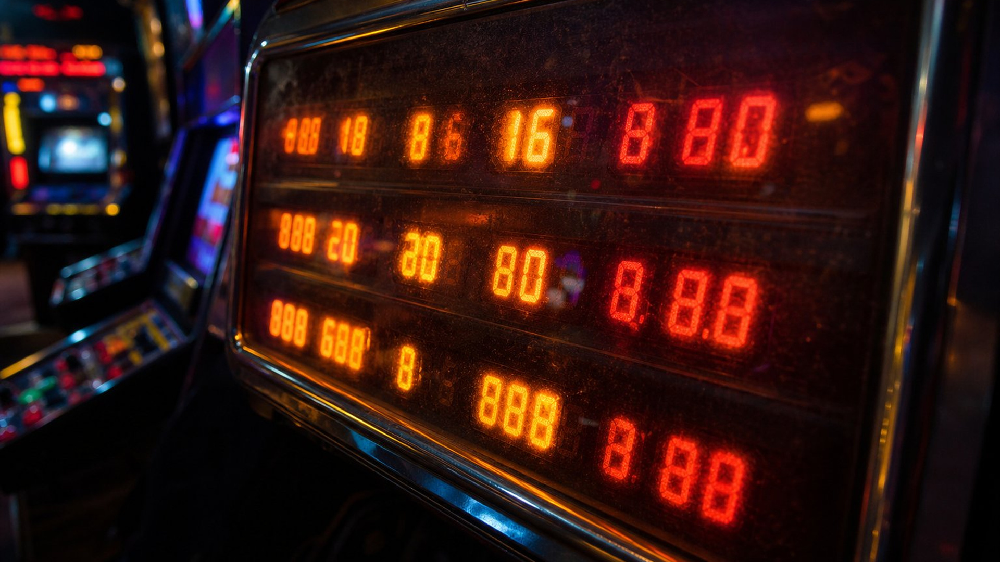
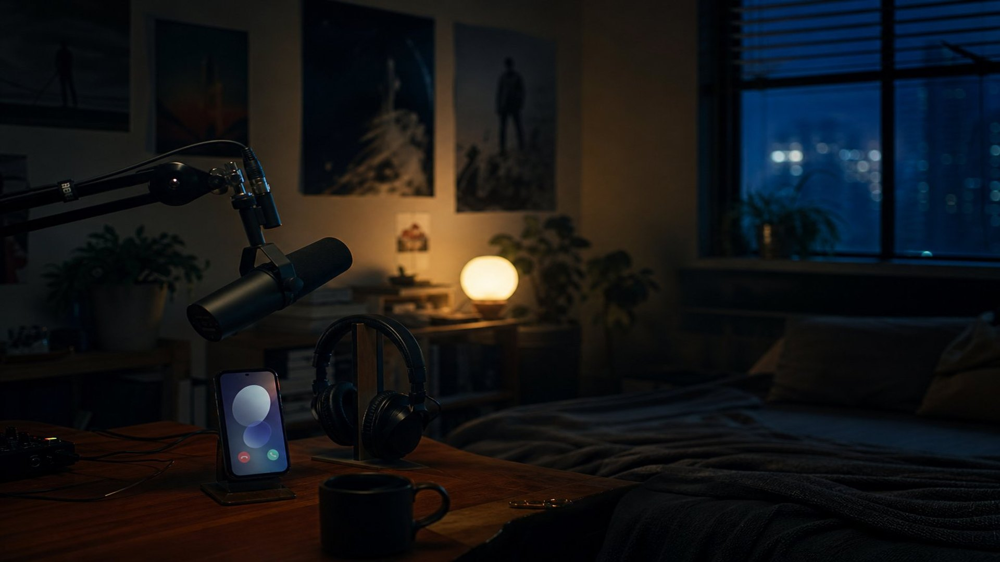

S5 · Quiz
Quiz GTA VI
Un quiz de 30 questions qui refuse l'approximation : calendrier, distribution, régions nommées, seuils du 100 % et mesures techniques. Chaque correction porte sa référence.
Le quiz : 30 questions, aucune invention
Chaque question porte sur un fait daté et sourcé : calendrier, distribution, régions nommées, chiffres de complétion publiés après l'embargo, technique mesurée. Aucune question ne porte sur le contenu interne du jeu — missions, fins, lieux secrets — parce que ce contenu n'est pas encore accessible au public et n'est documenté que de façon partielle. Vous avez 20 secondes par question, et chaque réponse corrigée renvoie à sa référence sourcée dans le corpus de recherche du projet.
Ce qui viendra après le 19 novembre
Questions de missions
À ajouter seulement quand la liste officielle sera stabilisée, avec SpoilerToggle obligatoire.
Un quiz devient vraiment intéressant quand il peut poser des questions sur ce qu'on a tous vécu en jouant. Voici ce qui pourra être ajouté, et à quelle condition. QIZ-04
- Questions de missions — seulement une fois la liste officielle établie et les noms stabilisés, avec SpoilerToggle obligatoire.
- Questions de personnages secondaires — dès que la distribution complète est confirmée par le jeu lui-même, pas par une liste de trophées.
- Questions de lieux — à partir de la carte du jeu, pas des reconstructions communautaires.
- Questions de chiffres — uniquement des chiffres affichés par le jeu ou publiés par Rockstar.

Les pièges classiques
- « Combien de fps ? » — la réponse est 30 partout, y compris sur PS5 Pro : beaucoup répondent 60 par habitude.
- « Quand le 100 % devient-il visible ? » — après l'histoire, mais la progression antérieure compte : les deux moitiés de la réponse sont vraies.
- « Quelle est la taille de la carte ? » — Rockstar ne donne aucun chiffre. Toute réponse en km² est communautaire.
SPOILER PRESSE · 18/11
Statuts de cette page
- OFFICIEL Date, plateformes et protagonistes : 30 questions vérifiées.
- PRESSE · 18/11 Les banques de questions existantes mélangent série et actualité.
- PRESSE · 18/11 Chiffres de complétion et mesures techniques datés du 18/11.
